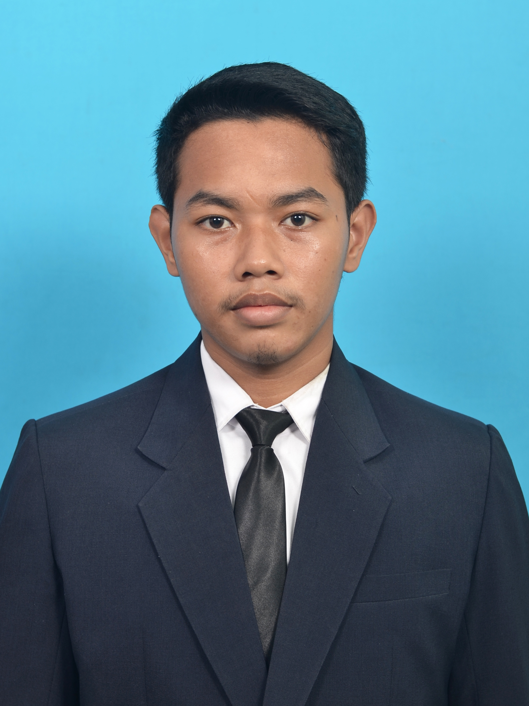
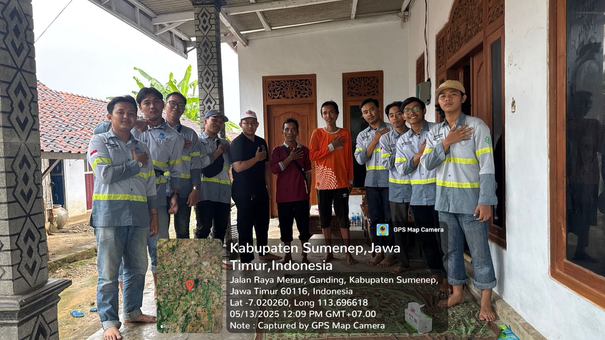
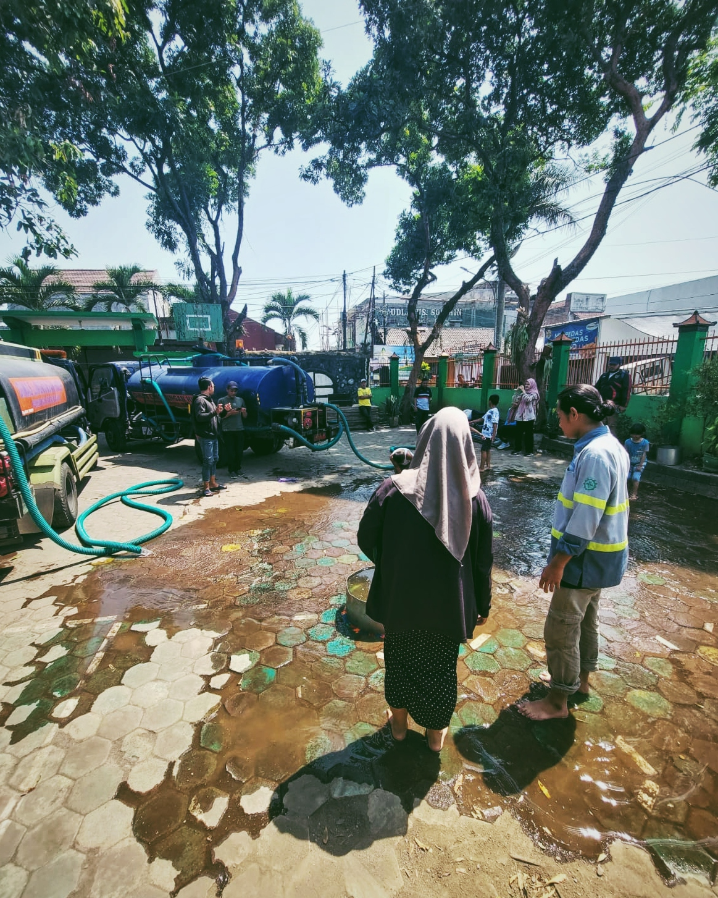

Moch Ferry Dwi Fitriansyah
Water Resources Engineering Student
Mahasiswa D4 Teknik Sipil - Teknologi Rekayasa Konstruksi Bangunan Air - Institut Teknologi Sepuluh Nopember
Hydraulic Modeling | Water Resources Planning | Survey Engineering
Download CVAbout Me
Mahasiswa semester akhir D4 Teknik Sipil, program studi Teknologi Rekayasa Konstruksi Bangunan Air di Institut Teknologi Sepuluh Nopember dengan fokus pada perencanaan sumber daya air dan analisis hidrolika. Berpengalaman melalui magang pada proyek irigasi di BBWS Bengawan Solo dan Konsultan CV Intishar Karya, serta keterlibatan dalam Survei Proyek Sumur Irigasi Dangkal (SID) di Madura yang mendukung analisis teknis dan pengawasan lapangan. Didukung kemampuan menggunakan software HEC-RAS, ArcGIS, dan AutoCAD, serta siap berkontribusi dalam perencanaan dan analisis di bidang keairan.
Projects

Survey Sumur Irigasi Dangkal, Madura

Penelitian Sumur Resapan, Malang

Survey Topografi Gudang Peluru TNI, Sidoarjo
Skills
Hydraulic Modeling
HEC-RAS, EPA-SWMM, EPANET
GIS & Mapping
ArcGIS
CAD & Drafting
AutoCAD
Geotechnical
GeoStudio
Contact
Email: callmeferry999@gmail.com
No.Hp: 085856105883